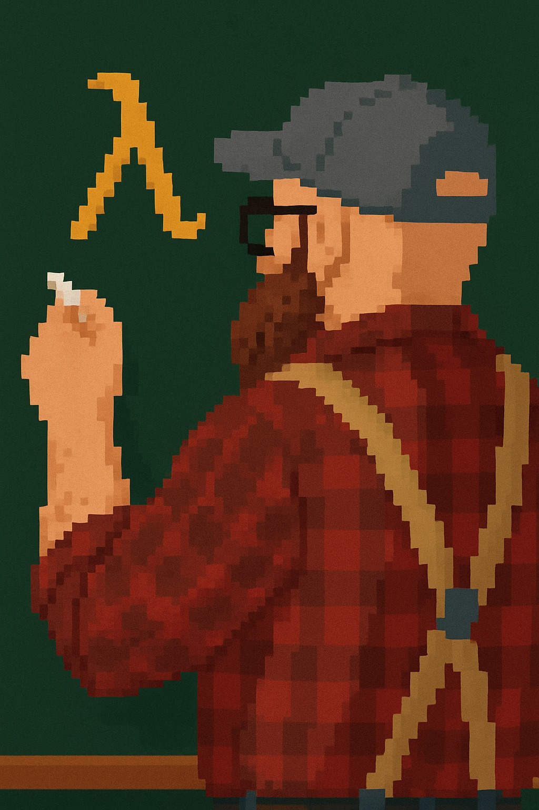

 Associate Professor
Department of Linguistics, Languages, & Cultures
Michigan State University
🐌 B404 Wells Hall, 619 Red Cedar Rd, East Lansing, MI 48824
🔍 semantics, pragmatics, syntax
🔬 exhaustivity, implicature, numerals, polarity sensitivity, plurality, presupposition, prosody, questions
💤 The source code and license for the content of this website are available on GitHub.